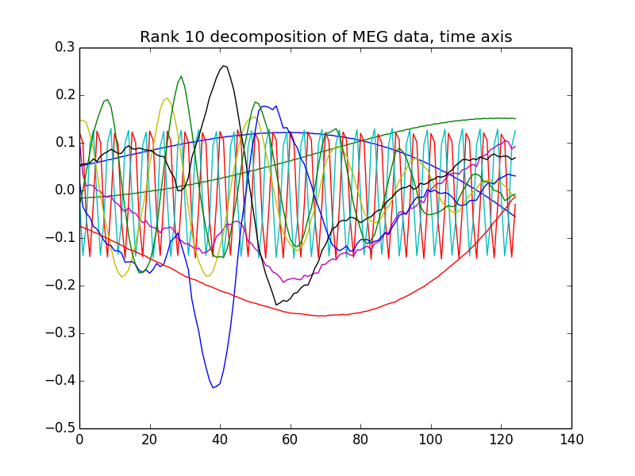

MEG data is notriously complex. An SVD over the flattened matrix does not give any useful or interpretable results. Using the extra structural information of the dataset, a CANDECOMP/PARAFAC decomposition is able to pull out interesting basis functions from this signal.
The waves at 50Hz represent the power line interference (recordings were done in the UK), while the longer 10Hz waves appear to represent the “alpha wave” of the brain.
The aperiodic signals represent the response of the brain to the presentation of an image of a face, or an image of a scrambled face.
Python source code: plot_meg.py
print(__doc__)
from tensorlib.datasets import fetch_decmeg
from tensorlib.decomposition import cp
import matplotlib.pyplot as plt
import time
X, meta = fetch_decmeg()
X = X[:, :, 125:250]
t0 = time.time()
U0, U1, U2 = cp(X, n_components=10, init_type="hosvd")
plt.plot(U2)
plt.title("Rank 10 decomposition of MEG data, time axis")
plt.show()
Total running time of the example: 32.43 seconds ( 0 minutes 32.43 seconds)